Operating Documentation
Direction 5193574-800, Rev# 22
LightSpeed 7.X Service Methods
Module Version 2.0, Version Date 3/4/11
Operating Documentation |
| Required Persons | Preliminary Reqs | Procedure | Finalization |
|---|---|---|---|
| 1 | Not Applicable | 2 hours | Not Applicable |
The following procedure describes and illustrates the system software loading process commonly referred to as the Load From Cold (LFC). It is important to follow the steps listed below in order.
| NOTE: | These instructions and procedural flow are structured for performing a Load From Cold on a system with the same version software. In other words, a reload of the same software release. If the system being loaded is running an earlier release of software, refer to the Software Upgrade procedure in the Field Modification Instructions (FMI) for the appropriate software release. Additional instructions may be needed when upgrading software, and this information will only be found in the FMI instructions. |
Table 1: GOC6 Series (GOC6 & 6.5) Operator Console System Software Revisions
| System Type | Apps Software Revision | OS Software Revision |
| Lighspeed VCT Series | 10MW44.4 | CTT prod-5.3.11 |
| Last Revised: | 11 February 2011 |
| Item | Qty | Effectivity | Part# | Manufacturer | |
|---|---|---|---|---|---|
| Flat Blade Screw Driver | 1 | - | - | - | |
| Item | Qty | Effectivity | Part# | Manufacturer |
|---|---|---|---|---|
| DVD-RAM Media | 1 | - | - | - |
| or USB Media (ex: USB Flash Memory Stick or Hard Drive, min: 2 GB, formatted FAT32) | 1 | - | - | - |
| Item | Qty | Effectivity | Part# | Manufacturer | |
|---|---|---|---|---|---|
| None | 0 | - | - | - | |
| Condition | Reference | Effectivity |
|---|---|---|
All hardware components of the System must be functional. | - | - |
The Operator Console Front Cover will need to be removed to gain access to the Host Computer DVD Drive. | - | - |
A valid and current System State Backup is required. System State is already configured for site specific configuration and preferences. If System State Backup media is missing or not current, some or all of the following must be performed: (1.) A manual configuration using information contained on the System Configuration Data Sheet completed at installation time. (2.) Software Options Licences will need to be manually reloaded. (3.) System Calibrations will need to be performed. | - | - |
Only trained service personnel should service the GE CT Scanner. | - | - |
CTT Operating System, Version 5.3.11
CT Applications Software
Confirm that a current System State Backup Media is on site. If unsure of the status of the System State, execute System Save State Restore procedure found in the Software Chapter of this manual. Save a System State Backup to either DVD-RAM or USB Media.
Remove all media from MOD and DVD Peripheral Towers before starting the OS Load of the LFC process.
Unplug the Hospital Network (HSP - J26) cable from rear Console bulkhead.
Label the cable as HSP - J26 (if necessary) and set it aside during LFC.
Remove the Operator Console front cover per the prescribed procedure Console Cover Removal and Installation.
Insert the OS Disk into the Host Computer DVD Drive. See the following illustrations.
Illustration 1: GOC6 Host Computer DVD Drive Location
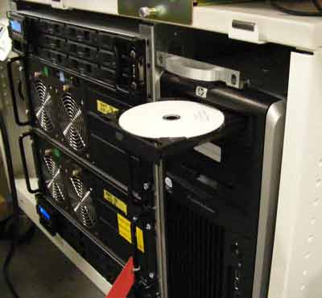
Illustration 2: GOC6.5 Host Computer DVD Drive Location
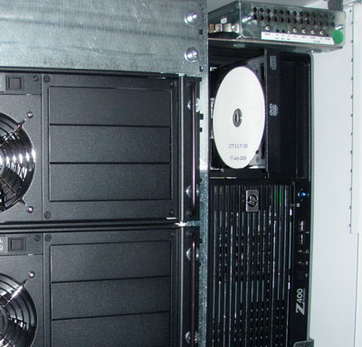
Shutdown and Power Cycle Operator Console:
Using the toolchest, open a Terminal Window.
Type: {ctuser@hostname}halt
Wait for System Halted message to appear on the monitors.
Illustration 3: Monitor Display - System Halted

Turn Off Operator Console power. Wait 30 seconds, then turn power On.
As the Host Computer restarts, the boot process messages appear. After the booting process completes the boot: prompt appears.
At the “boot:” prompt, type the following:
Type: boot: GEHC2
Illustration 4: Monitor Display - Boot Prompt
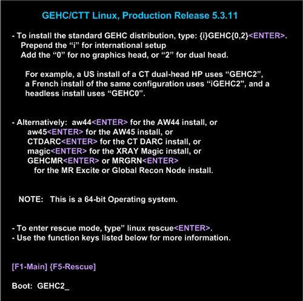
After the OS is loaded on the Host Computer, the Complete Window appears.
Illustration 5: Monitor Display - OS Load Complete
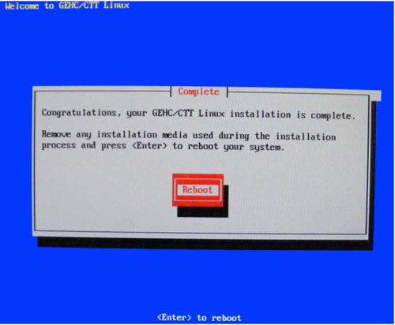
Remove the OS Disk from the Host Computer DVD drive when it ejects and close the tray. Press [Enter] to Reboot.
The Host Computer begins to reboot.
| NOTE: | Do not insert the Applications Software DVD into the Host Computer until the Host Computer has completed rebooting and a Terminal Window appears, displaying the prompt: [root@localhost ~]#. |
Illustration 6: Terminal Window - After OS Load and Reboot
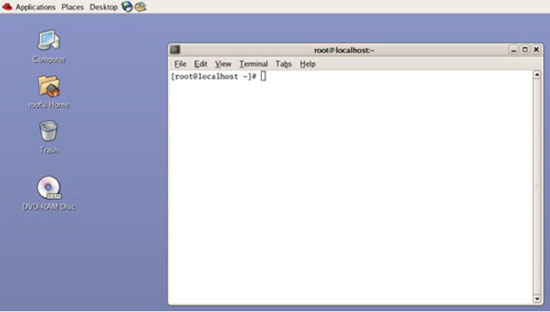
| NOTE: | GOC 6.5 Operator Consoles Only: Dual Monitor Displays: From this point in the procedure, the dual monitor display will appear reversed (Right monitor video will display on Left monitor and Left monitor video will display on Right monitor). This is normal, do not move monitor video cables! This also impacts the behavior of the mouse cursor. The mouse cursor will not cross over the middle junction of the dual monitor display. Instead the mouse cursor will need to be dragged to the outside of the dual monitor display in order to change from one monitor to the next. To place the mouse on the right monitor, drag the mouse outside the left monitor’s LEFT side. The mouse will then appear on the right monitor. This condition will be resolved after the Application Software is loaded on the system. Error Window After OS Bootup: After the OS Bootup, an Error Window will appear. This is normal and is related to the new Host Computer's (HP Z400) on board audio controller. When Error Window appears, close the error window by clicking on the [Close] button. This error is the result of driver configuration for the on-board audio hardware and will be resolved once the Application Software load is completed on the system. Illustration 7: GOC6.5 Error Window - After OS Load and Reboot 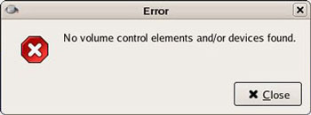 |
| NOTE: | GOC 6 Operator Consoles Only: Warning Window During APPS Load: After the OS Bootup and during the APPS load, a Warning Window will appear. This is normal and is related to the Host Computer's (HP xw8400) on board audio controller. When Warning Window appears, ignore it (take no action). This warning message is the result of driver configuration for the on-board audio hardware and will be resolved once the Application Software load is completed on the system. Illustration 8: GOC6 Warning Window - During APPS Load 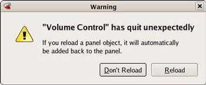 |
Open the tray on the Host Computer DVD Drive.
Insert the Applications Disk into the DVD Drive and close the tray.
| NOTE: | The Apps Software Disk will open and run automatically. |
Select [Run Command] in the Warning box.
Illustration 9: Apps Run Command Window
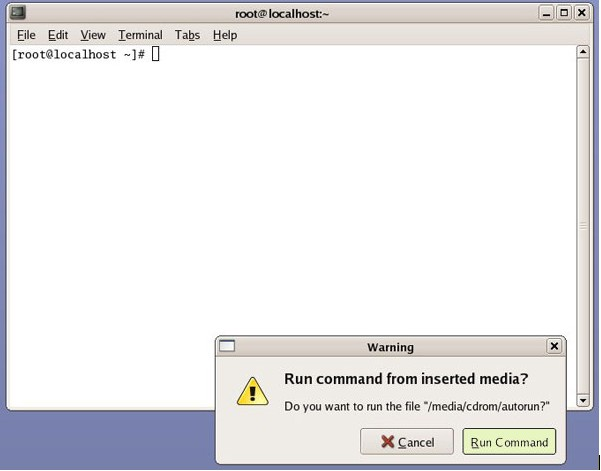
Select [Load] in the CT Software Installation window.
Illustration 10: Apps Load Command Window
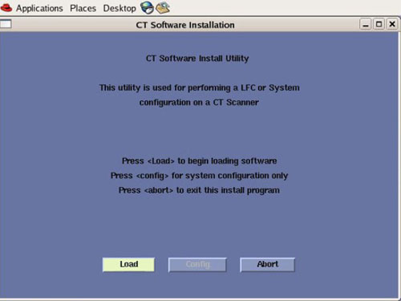
System State decision for Install INFO decision box will appear.
Select [Yes].
Illustration 11: Install INFO Window

| NOTE: | If a valid and current System State Backup media is not available, answer [No] and manually configure the Hardware Tab to define System and Console Type in accordance with the procedure Manually Configuring System INFO. |
System State (Install INFO) Media Type decision window will appear
Select [DVD] or [USB] based on media type available.
Illustration 12: System State Media Type Window

Insert the System State Backup Media (DVD-RAM or USB).
| NOTE: | DVD-RAM Media: Insert DVD-RAM Media into the DVD-RAM Drive
located in the DVD Peripheral Drive Tower. USB Media: USB Media can be inserted in any of the USB ports located on the console. Recommend using the Service USB port located next to the console's power switch. |
Select [OK].
Illustration 13: Install INFO - System State DVD Install Window

Illustration 14: Install INFO - System State USB Install Window

The Install INFO on the System State Backup Media will be read and if a valid System State Backup has been inserted, an LightSpeed/INFO window will become active.
Select [Accept].
Illustration 15: Install INFO - Accept Window

The Install INFO on the System State Backup Media will be displayed and a confirmation window will appear.
Select [Yes].
Illustration 16: Install INFO - Confirm Window

| NOTE: | Install INFO detail in illustration will differ depending on System type. Verify that the Install INFO detail is correct for the system before selecting [YES]. |
System Install INFO will be now used to create the CT Application load routine. Do not remove the Apps Disk until completed.
When completed, the Operator Console will automatically reboot.
After the Host Computer reboots, a pop-up window will appear
Illustration 17: CT Software Auto-Start Disabled Pop-Up Windows

Click [OK] to close window.
| NOTE: | Remove APPS disk from Host Computer. Remove System State Backup Media for either DVD-RAM drive or USB port. |
To launch LFC Menu, open a Terminal Window, and log on as root:
Type: {ctuser@hostname} su -[ENTER]
Type the root password and press [ENTER]
Type: [root@hostname] /usr/g/scripts/LFC/startLfcMenu.sh[ENTER]
A window will be displayed showing the LFC Menu.
| NOTE: | The LFC Menu Utility provides the tools necessary to complete
a LFC process without the use of the Linux Command Line. For more
detailed information on the operation of this menu click here: LFC Menu Tutorial Keyboard Control C Functionality: Using <CTRL + C> keys to abort LFC process or to close any shell and/or pop-up windows will cause the LFC Menu to display a fault condition for the selected process step. Windows must be closed with either: a) Right click the window title bar, then selecting [Destroy] from the menu. b) Left click the icon on the upper left corner of the window, then selecting [Close] from the menu. LFC Menu Settings: By default the System State (SysState) Device setting is configured for DVD. If using USB Media, change SysState Device Setting to “USB” by selecting LFC Menu “d” |
Illustration 18: LFC Menu Window
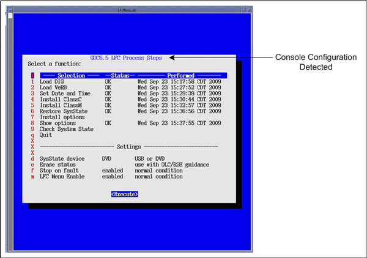
* Example only. Console specific. Menu display may differ system to system.
Select Load DIG (Menu Selection # 1)
Select [Execute], two shell windows will open and the DIG software will be loaded.
Upon completion of the DIG software load, close the two shell windows to return to the LFC Menu.
Illustration 19: LFC Menu - Load DIG Selection

Illustration 20: Load DIG Execution

Select Load VeRB (Menu Selection # 2)
| NOTE: | If the VeRB Computer is not configured in System INFO
file, the LFC Menu will display “Option Not Installed”
in status column. If the console does not have a VeRB Computer, this Menu Selection may be skipped. |
Select [Execute], two shell windows will open and the VeRB software will be loaded.
Upon completion of the VeRB software load, close the two shell windows to return to the LFC Menu.
Illustration 21: LFC Menu - Load VeRB Selection

Illustration 22: Load VeRB Execution

Select Set Date and Time (Menu Selection # 3)
Select [Execute], the Set Date and Time Utility will open in a shell window.
Follow on screen instructions for setting the correct date and time.
Upon completion of the Set Date and Time Utility, close the shell window to return to the LFC Menu.
Illustration 23: LFC Menu - Set Date and Time Selection
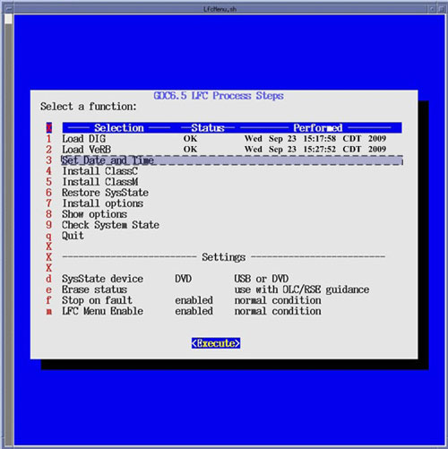
Illustration 24: Set Date and Time Execution

Select Install ClassC (Menu Selection # 4)
Selecting this item performs install of Advanced Service Software. (Not required for System operation.) Skip step if not applicable.
| NOTE: | Class C Advanced Service software applies only to GE Healthcare personnel and customers with an Advance Service Limited License agreement. |
Select Install ClassM (Menu Selection # 5)
Selecting this item performs install of Advanced Service Software. (Not required for System operation.) Skip step if not applicable.
| NOTE: | Class M Restricted Service software applies only to GE Healthcare personnel. |
Select Restore System State (Menu Selection # 6)
| NOTE: | When this menu selection is chosen, the System State Save
and Restore Utility will be launched. See System State Save and Restore procedure in the
Software Installation section of the Software Chapter in the Service
Documentation for more details. If previously installed, all Options will be restored during the Restore System State. Remember to set LFC Menu Settings (Selection “d”) to USB if using USB Media. LFC Menu is defaulted to DVD-RAM. |
Insert the System State Media in either the DVD-RAM Drive of USB Port depending on media chosen earlier in this procedure, then select [Execute].
A shell window will open and the System Stated will be restored. Several pop-ups will appear requesting configurations settings based on Options being restored. Select appropriate settings for the Options.
Upon completion of the Restore System State, a pop-up will appear reminding that a reboot will be required. Click [OK], but do not reboot at this time. Close the shell window to return to the LFC Menu.
Illustration 25: LFC Menu - Restore System State Selection
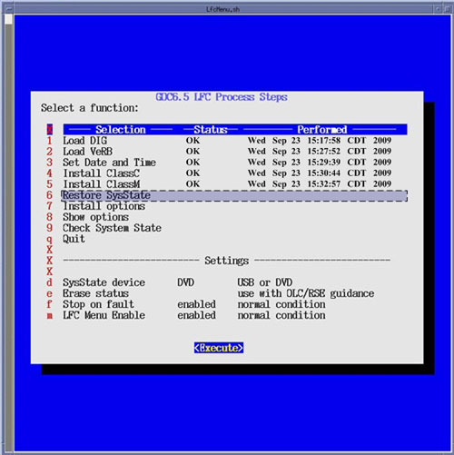
Optional Menu Selections
| NOTE: | Install Options (Menu Selection # 7) If this menu selection is chosen, the Install Software Options Utility will be launched. See Install Software Options procedure in the Software Installation section of the Software Chapter in the Service Documentation for more details. This menu selection is only required when a valid System State is not available. (Valid means: Current and Created after Options were loaded on system) If a valid System State was restored in the previous step “Restore System State”, this step may be skipped. After selecting [Execute], a shell window will open and the Install Software Option Utility will be launched. Upon completion of the Install Software Options Utility, a pop-up will appear reminding the user that a reboot will be required. Click [OK]. Close the shell window to return to the LFC Menu. Illustration 26: LFC Menu - Install Options Selection |
| NOTE: | Show Options (Menu Selection # 8) If this menu selection is chosen, the system will display all installed Options. This menu selection should be used to verify that all applicable Options are installed. After selecting [Execute], a shell window will open and the current installed Options will be displayed. Upon completion of the Show Options, close the shell window to return to the LFC Menu. Illustration 27: LFC Menu - Show Options Selection 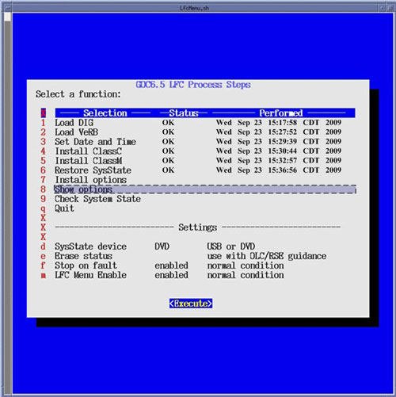 Illustration 28: Show Options Execution 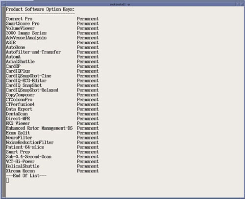 * Example only. Customer specific. Options displayed will be differ system to system. |
| NOTE: | Check System State (Menu Selection # 9) If this menu selection is chosen, the system will display the differences between the INFO file on the System State media to the INFO file on the system. Any differences are identified in RED. If any difference are shown, either a new System State should be save upon completion of LFC or further feature configuration may be needed. This selection requires the System State media to be inserted in the applicable device (USB Port or DVD-RAM Drive) prior to executing selection. After selecting [Execute], a shell window will open and the System State Comparison List will be displayed. Upon completion of the Check System State, close the shell window to return to the LFC Menu. Illustration 29: LFC Menu - Check System State Selection 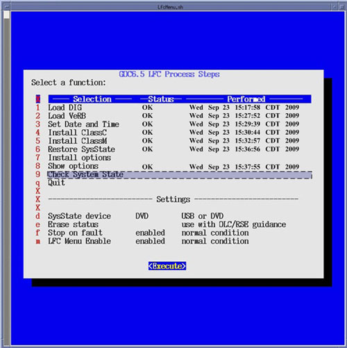 Illustration 30: Check System State Execution 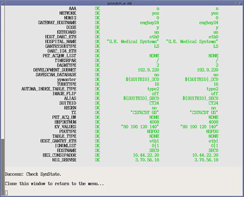 |
Select Quit (Menu Selection # 10)
Then select [Execute], the LFC Menu will check that the minimum procedural steps required for a LFC have been completed.
If all LFC Menu selections have been completed, the LFC Menu will terminate.
If some of the LFC Menu selections have been skipped, a pop-up window will appear confirming LFC Status.
Click [Yes] if satisfied that all necessary LFC Menu selections have been completed.
Illustration 31: LFC Menu - Quit Selection

Illustration 32: LFC Menu Quit Execution Confirmation Window

| NOTE: | The “LFC process is incomplete” message in
the LFC Menu Quit Execution Window appears whenever a LFC Menu selection
has been skipped. Not all selections require execution. This execution
check is only meant to confirm the User's desire to terminate the
LFC Menu when selection have not been executed. Selecting this menu item will terminate the LFC Menu. Only select this menu selection once all steps have been completed. Once the LFC Menu is turned off (either by confirming the “Quit” Process selection or by disabling the LFC Menu in the LFC Menu Settings), it will remain disabled. To turn the LFC Menu back on will require the following command string to be entered in a Linux Terminal windows: Open a Terminal Window, and log on a root. Type: [root@hostname] /usr/g/scripts/LFC/startLfcMenu.sh[ENTER] |
Reboot the System
In the Terminal Windows used to launch the LFC Menu, type:
[root@hostname] reboot [ENTER].
Allow the System to come up fully into Application Mode. If the CT Applications fail to start automatically, open a Terminal Window and type:
{ctuser@hostname} st[ENTER].
Perform the Tube Install Certification procedure.
When completed, continue with Flash Download.
Perform the Flash Download Utility found on the Common Service Desktop - Utilities Tab, select [Flash Download].
Illustration 33: Common Service Desktop - Utilities Tab, Flash Download
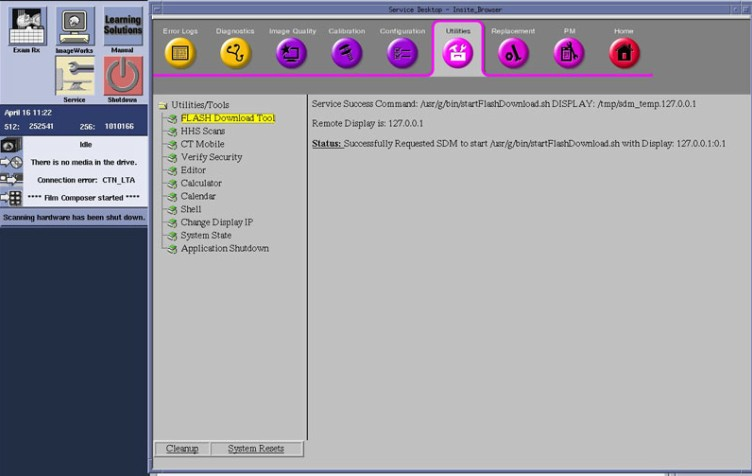
| NOTE: | The Flash Download takes 5 - 30 minutes, depending on which subsystems need firmware updating. |
When the Flash Download Window opens,
Select [Update].
Illustration 34: Flash Download Window

Once the Gantry Hardware Flash Downloads successfully, select [Dismiss].
Close the Common Service Desktop.
Reconnect the Hospital Network cable at the rear of the Operator Console (J26) that was disconnected at the beginning of the LFC.
Select Shutdown icon on the Desktop and restart the system.
Perform the System State Save and Restore procedure and save a System State Backup to either DVD-RAM or USB Media.
Save the System State Backup media in a safe and secure location for future service activity.
If applicable, install any Service Pack updates related to this release.
| NOTE: | Follow Service Pack load instructions supplied with the Service Pack Software. |
Refer to System Scanning Tests in the Functional Checks chapter of this manual to confirm proper operation.
Reinstall Console Front Cover.